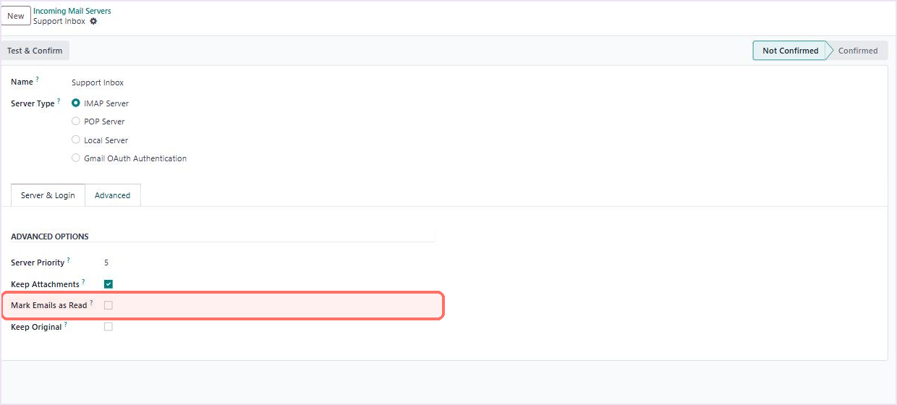
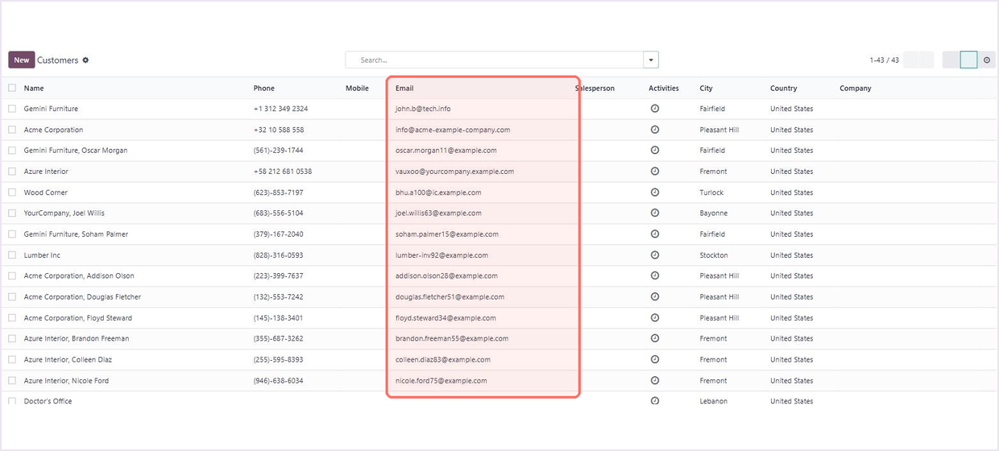
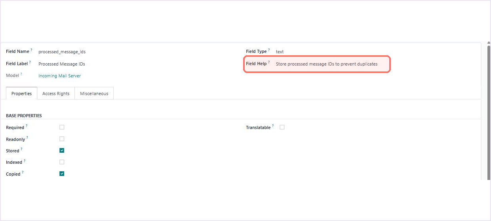
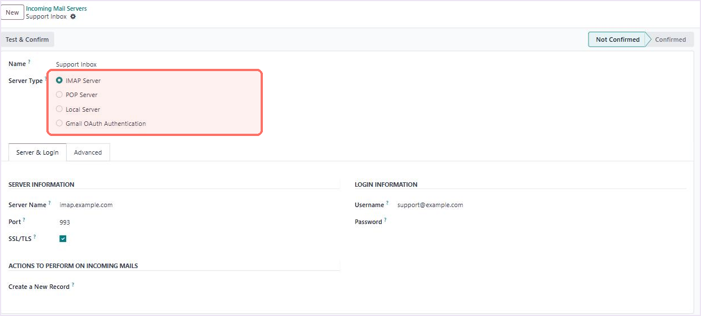
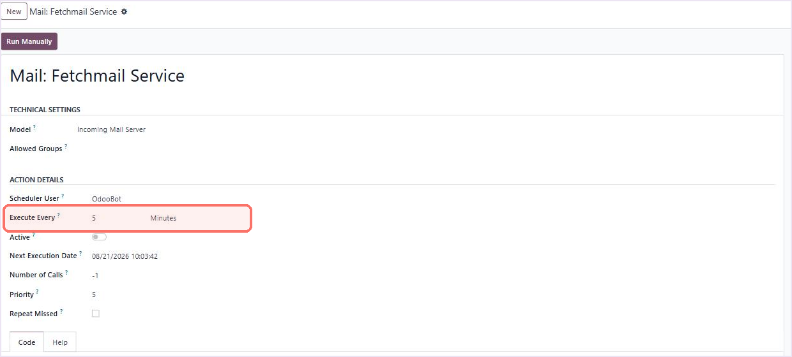

Incoming mail control for Odoo 16
Every newsletter, every cold pitch and every message your own staff send lands in Odoo — and each unknown sender quietly becomes a brand-new contact.
Only people you already know
get into your Odoo.
Personal Email Usage puts three filters on your incoming IMAP mail server: skip messages from your own users, skip messages from senders who are not in Contacts, and never let an email create a contact record on its own. Everything else keeps working exactly as Odoo built it.
Free under LGPL-3 · install from Apps, tick one box, done · odoo@doodex.net

| 01Overview |
Odoo fetches everything. This module decides what deserves to come in.
Odoo’s own incoming mail server does one job well: it pulls messages in and routes them. It does not ask who sent them. Personal Email Usage adds that question — and answers it before the message ever becomes a record.
|
Standard Odoo incoming mail
|
With Personal Email Usage
|
3 filters on every incoming message |
1 checkbox to configure |
0 contacts created by email |
2 dependencies: base and mail |
Before you install
Ask whether it fits your mail setup
Tell us which mailbox you fetch, what it receives and what you want filtered. We will tell you straight whether this module covers it — and if it does not, what would.
|
|
|


Scan a code with your phone camera. The address under each code is the same one the code contains, written out so you can type it by hand.
| 02Use Cases |
Six mailboxes this was built for
If a shared mailbox feeds your Odoo database, one of these is already your problem. Each one is fixed by the same three filters.
|
|
||||
|
|
||||
|
|


| 03Features |
Twelve things it does, stated plainly
No hidden behaviour. Everything on this list is visible either on the mail server form or in the Odoo server log.
 01 A read-status switch you controlA new Mark Emails as Read checkbox appears on the incoming mail server form, right under Keep Attachments. Tick it and fetched mail is marked read on your mail server. |
 02 Or leave it unread for your teamLeave the box unticked and messages stay unread in the mailbox after Odoo reads them — so anyone watching the inbox in Outlook or Gmail still sees what has come in. |
 03 Mail from your own staff is skippedEvery sender is checked against your internal users first. If the address belongs to one of them, the message is skipped and never routed. Portal and public users are not treated as staff. |
 04 Mail from strangers is skippedYour Contacts list is the allowlist. If the sender is not saved there, the message is skipped — newsletters, cold outreach and one-off senders stop at the door instead of becoming records. |
 05 Known contacts land in their own chatterMail from a saved contact goes through Odoo’s normal routing, so it appears in that contact’s chatter and builds the full history in one place. |
 06 No contact is ever created by emailWhen a mail alias points at Contacts, an existing contact is matched and reused. An unrecognised address creates nothing at all. Your contact count only changes when a person changes it. |
|
 07 Each message is processed onceEvery message that gets through is recorded by its Message-ID, so a later fetch will not thread the same email twice — even when it is still marked unread on the server. |
 08 IMAP only — POP3 is untouchedThe filters apply to IMAP servers. Any POP3 or other server type on the same database keeps Odoo’s original behaviour, exactly as shipped. |
|
 09 It runs on Odoo’s own scheduleThe filters hook into the standard Mail: Fetchmail Service action, so fetching keeps whatever interval you already set. Each cycle writes a summary to the Odoo log: fetched, failed, skipped. |
 10 Test it without waitingOpen Mail: Fetchmail Service and press Run Manually to trigger a fetch on the spot, then read the summary in the log. You know in seconds whether the filter behaves as you expected. |
 11 Aliases stop inventing partnersAliases that target any other model — leads, tasks, tickets — behave exactly as Odoo intends. Only the Contacts model is protected from automatic creation. |
 12 Install it and it is already workingNo wizard, no setup screen, no key. Install from Apps and the filters are live on your IMAP servers from the next fetch. Uninstall and Odoo returns to standard behaviour. |
What you will not find in it
Being clear about the edges is part of being accurate.
|
|
||||
|
|
||||
|
|
Your contact list should grow because
you decided it should.
Not because a mailing list found your support address on a Tuesday.
| 04Why This |
One unfiltered email is never just one email.
It is the first link in a chain that ends with somebody on your team cleaning up by hand. Here is how a single message from a stranger turns into work.
|
STEP 1
A stranger writes inA newsletter, a bot, a cold pitch. It reaches your shared mailbox like any other message. Blocked here |
STEP 2
Odoo saves themWith an alias on Contacts, Odoo creates a record so it has somewhere to file the message. |
STEP 3
It spreadsThat record now turns up in searches, filters, mailing lists and your team’s autocomplete. |
STEP 4
Your numbers driftContact totals, segment sizes and campaign lists all count somebody who was never a customer. |
STEP 5
Someone deletes itBy hand, month after month — and only after it has already skewed a list or a report. |

Personal Email Usage ends the chain at step 1. The record is never created, so there is nothing downstream to fix.
What you get back
Three things change the first time the cron runs after you install it.

A database that stays clean by itselfNo rule list to maintain, no monthly clean-up, no import to undo. The filter reads your live contacts at every fetch, so it is right the day you add a customer and still right a year later. |
A team that only reads real messagesInternal forwards and cold outreach never reach a thread. What your people open in Odoo is what a customer actually wrote — so nobody learns to skim past the noise. |
Two minutes, then nothingInstall, tick one box, done. No activation key, no account, no subscription and no outside service that could break your incoming mail later on. |
One honest note on settings
Messages that are skipped are deliberately left untouched in your mailbox. If you leave Mark Emails as Read unticked, those skipped messages stay unread and will therefore be looked at again on the next fetch, and skipped again. That is harmless, and it is what keeps them visible to a human watching the inbox.
On a busy mailbox that receives a lot of unknown senders, tick Mark Emails as Read. Fetched messages are then marked read on the server and each one is only examined once. We would rather tell you this here than let you discover it in a log file.
Seen the chain?
Tell us what your mailbox actually receives
Describe the mailbox — a shared sales address, a support desk, an alias feeding CRM — and we will tell you which of the three filters you need and which you do not.
|
|
|
Scan a code with your phone camera, or type the address printed under it.
| 05Price |
Free. Not free-for-now.
Published under LGPL-3. There is no paid tier of this module, no activation key, no subscription and no usage limit. What you download is the whole thing.
|
One edition
Free
LGPL-3 · Odoo 16.0 · Community and Enterprise
|
What you get the moment you install it
Paid work is optional and separate: if you want the filter extended — a per-server allowlist, a different rule for one alias, a report of what was skipped — Doodex can build it. Ask us for a quote before you commit to anything. |
Requirements, and how to turn it on
Everything it needs is already in your Odoo. Nothing to buy, nothing to install alongside it.
|
What it runs on
|
Setup — about two minutes
|
| 06FAQ |
Twelve questions people actually ask
+Does this replace Odoo’s incoming mail server?
No. It extends it. Your existing incoming mail server records, credentials, aliases and scheduled action stay exactly as they are. The module only adds checks that run before a message is routed.
+What happens to an email from someone who is not a contact?
Nothing is created. The message is skipped, a line is written to the Odoo server log saying so, and the email itself stays in your mailbox where a person can still read it. It is not deleted and it is not moved.
+Will it stop Odoo creating duplicate contacts?
It stops Odoo creating contacts from incoming email altogether. When an alias points at Contacts and the sender is already saved, that existing record is used. When the sender is unknown, no record is made. Contacts created by people, imports or other modules are unaffected.
+Does it work on Odoo Community, or only Enterprise?
Both. It depends only on base and mail, which ship with Community.
+Which Odoo versions are supported?
This listing is for Odoo 16.0, module version 16.0.1.0.0. If you need it on another version, email odoo@doodex.net and tell us which one — we will tell you honestly what porting it involves.
+Does it work with POP3?
The filters apply to IMAP servers. A POP3 server on the same database keeps Odoo’s standard behaviour and is not touched by this module in any way.
+Where exactly is the Mark Emails as Read setting?
Turn on developer mode, then go to Settings → Technical → Email → Incoming Mail Servers and open your server. The checkbox sits just after Keep Attachments. It is a technical setting, so it is intentionally hidden without developer mode.
+Should I tick Mark Emails as Read or leave it off?
Leave it off if your team still watches the mailbox in Outlook or Gmail and you want messages to stay bold and unread there. Tick it if the mailbox receives a lot of mail from unknown senders — that way each message is examined once and marked read, rather than being looked at and skipped on every fetch.
+Does it filter emails my team sends to each other?
Yes. If the sender address matches the login of an internal Odoo user, the message is skipped. Portal users and public users are not treated as internal staff, so their mail follows the normal contact rule instead.
+Does it send my data anywhere?
No. There is no external API call, no telemetry and no account. The module reads your mail server and your own Odoo database and writes to nothing else. That matters for GDPR, and it is why the answer is this short.
+What happens if I uninstall it?
Odoo returns to its standard incoming mail behaviour immediately. The added field disappears with the module. Messages that were already threaded stay where they are — nothing is removed.
+Can you customise the rules for us?
Yes, and it is a separate paid engagement, quoted before any work starts. Common requests are a per-server allowlist, a different rule for one alias, or a report of what was skipped. Email odoo@doodex.net and describe what you need.
| Works great with |
Other Doodex modules, built the same way
Different problems, same approach: narrow scope, a one-time price, and the limits stated up front.
|
|
|
| 07Releases |
Public release history
Every version published on this page is listed here, newest first, with what changed.
| 16.0.1.0.0 | First public release |
| NEW | Mark Emails as Read setting on the incoming mail server, shown in developer mode. |
| NEW | Emails sent from internal Odoo users are skipped and logged. |
| NEW | Emails from senders who are not saved in Contacts are skipped and logged. |
| NEW | Incoming email can no longer create a contact record; an existing contact is matched and reused instead. |
| NEW | Message-ID de-duplication per incoming mail server. |
| NEW | Summary log line after every fetch: fetched, failed and skipped counts. |
| IMP | POP3 and other non-IMAP server types are explicitly passed through to standard Odoo behaviour. |
| IMP | Automated tests covering the filters, the read-status behaviour and the no-auto-contact rule. |
Found something that does not behave as described on this page? Email odoo@doodex.net with your Odoo version and the relevant server log line. Fixes are published here as a new version.
Free to install, free to keep
Install it, or ask us first — both are fine
If you already know your mailbox needs this, install it and tick the box. If you would rather have someone check your setup first, that is what the three routes below are for.
|
|
|
Scan a code with your phone camera, or type the address printed under it. Both go to the same place.